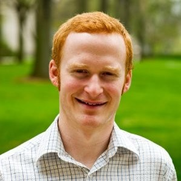

Collaboration for Autonomous Science Instruments
A workshop convening researchers, science instrument vendors, and autonomous science startups to collaborate on better software and interoperability that accelerate autonomous laboratory development.
Hosted by Renaissance Philanthropy.
When
October 23–24, 2025
Where
San Diego, California
Organizer

Charles Yang
AI for Science Fellow at Renaissance Philanthropy
Workshop Materials
- 1-Pager Research Partnership Proposal Template [for Researchers]
- Vendor Feedback Form [for Researchers]
- Breakout Discussion Doc - Day 1
- Have you formed a research partnership from this workshop? Fill out this Research Partnership Form
- Please provide feedback on how the workshop went so that we can improve future events for the autonomous lab community! Feedback form here
Speakers
Venkat Viswanathan
University of Michigan
Theresa Mayer
Carnegie Mellon University
Day 1: Thursday, October 23
| Time | Event | Details |
|---|---|---|
| 8:00–9:00am | Breakfast | Buffet and networking |
| 9:00–9:45am | Welcome & Keynote | Charles Yang, welcome remarks Theresa Mayer, keynote address Icebreaker discussion |
| 9:45–10:45am | Research Partnership Lightning Talks I | David Fenning (University of California, San Diego) and Caitlin Hogan (Labric) Jehad Ahmed (Meta) and Aaike van Vugt (VSParticle) Nikolai Dorka (Stanford)and Hongquan Li (Cephla) |
| 10:45–11:15am | Break | Coffee and hallway conversations |
| 11:15–12:00pm | Research Partnership Lightning Talks II | Boris Slautin (University of Tennessee, Knoxville) and Roger Proksch (Oxford Instruments). Wei Zhou (Virginia Tech) and Mark Huntington (PhysicsX) Utkarsh Pratiush (University of Tennessee, Knoxville) and Paolo Longo (Thermo Fisher). |
| 12:00–1:00pm | Lunch | Catered lunch |
| 1:00–2:00pm | Breakout Discussion | Breakout discussions and report-outs on challenges and opportunities for autonomous science instrumentation |
| 2:00–2:30pm | Break | Coffee and hallway conversations |
| 2:30–3:30pm | Facilitating Research Partnerships Breakouts | Round 1 of research partnership breakouts |
| 2:30–3:30pm | Autonomous Science Roundtable | Concurrent roundtable with philanthropists, investors, and AI labs on advancing autonomous laboratories |
| 3:30–4:00pm | Break | Refreshments |
| 4:00–4:30pm | Closing Session | Charles Yang, survey results and next steps |
| 4:30–6:00pm | Reception | Networking reception |
Day 2: Friday, October 24
| Time | Event | Details |
|---|---|---|
| 8:00–9:00am | Breakfast | Continental buffet and networking |
| 9:00–9:30am | Welcome & Keynote | Charles Yang, welcome and reminders Venkat Viswanathan (University of Michigan), keynote address |
| 9:30–10:30am | Facilitating Research Partnerships Breakouts | Round 2 of research partnership breakouts |
| 10:30–11:00am | Break | Coffee and hallway conversations |
| 11:00–12:00pm | Closing Session | Submit research partnerships Follow-ups and closing remarks |
| 12:00–1:00pm | Lunch | Farewell lunch |
Confirmed Participants
Unfortunately, due to the U.S. federal government shutdown, several participants were not able to attend.Aditya Rajagopal
Esperto Medical
Austin Carson
SeedAI
Boris Slautin
University of Tennessee
Bryan Cheong
Salesforce
Caitlin Hogan
Labric
Chad Wilson
Mirror Physics
Connor Hogan
Labric
Cristian Ponce
Tetsuwan Scientific
Daniel Abdoue
University of California, San Diego
Daniil Boiko
OnePot AI Inc.
David Fenning
University of California, San Diego
Devora Najjar
Alfred P. Sloan Foundation
Doga Ozgulbas
Argonne National Laboratory
Eric Goergen
Thermo Fisher Scientific
Fernando Pérez
University of California, Berkeley
Giovanni Mariotta
Thermo Fisher Scientific
Hemanth Neelgund Ramesh
University of Washington
Hiromu Rose
Episteme
Hongquan Li
Cephla
Ian Meyer
Satomic.ai
Jack Wells
NVIDIA
Jehad Ahmed
Materials Data Factory
Josh Greenberg
Alfred P. Sloan Foundation
Justin Gallivan
W. M. Keck Foundation
Kinston Ackölf
University of Utah
Maher Alghalayini
Lawrence Berkeley National Laboratory
Mark Huntington
PhysicsX
Matt Watson
Labman
Nicolai Dorka
Stanford University
Nicole Nelson
University of Wisconsin–Madison
Nina Lu
OnlyCures
Paolo Longo
Thermo Fisher Scientific
Roger Proksch
Oxford Instruments
Semion Saikin
Kebotix Inc.
Sergio Pablo Garcia Carrillo
Acceleration Consortium
Sheryl Sanchez
University of Tennessee, Knoxville
Theresa Mayer
Carnegie Mellon University
Thomas Milton
Amodo Design
Utkarsh Pratiush
University of Tennessee, Knoxville
Venkat Viswanathan
University of Michigan
Wei Zhou
Virginia Tech
Yan Zeng
Florida State University
Yukun Wu
Argonne National Laboratory
Yuxing Fei
University of California, Berkeley
Organizing Committee

David Fenning
University of California, San Diego

Jie Xu
Argonne National Laboratory

Milad Abolhasani
North Carolina State University
Shijing Sun
University of Cambridge